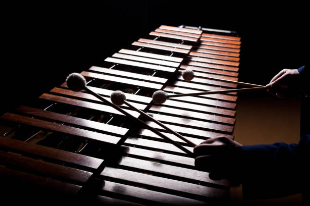

เป็นเครื่องดนตรีหลักเป็นที่นิยมในหมู่มาก และเป็นส่วนประกอบสำคัญของกลองชุด
| yahama | evan | muu | promake | lunfeg | puudr |
|---|---|---|---|---|---|
| 2022-23 | jazz | 55 | 28.9 | 8.3 | 6.8 |
| 2021-22 | jazz | 56 | 30.3 | 8.2 | 6.2 |
เตรื่องกระทบเป็นเครื่องที่ใหเจังหวะของวงซึ่งมีความสำคัญเป็นอย่างมาก และเป็นเครื่องที่้สร้างเสียงเอ็กเฟกต่างๆ ให้กับเพลง ทั้งนี้ยังมีเครื่องกระทบอีกหลายชนิด จึงเกิดวงญำพแีกกรนื ขึ้นมา
สอบถามเพิ่มเติมได้ที่
000-000-000
